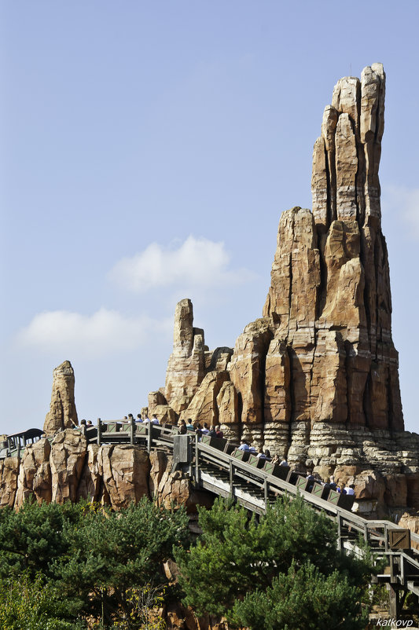

Большая Громовая гора (Диснейленд) - Вход в аттракцион расположен на берегу, а сам он находится на острове. Поезд в самом начале ныряет под рекой, чтобы добраться до самого аттракциона. Вы несетесь по старой шахте, периодически выскакивая наверх и вновь погружаясь в подземелье Громовой Горы.
